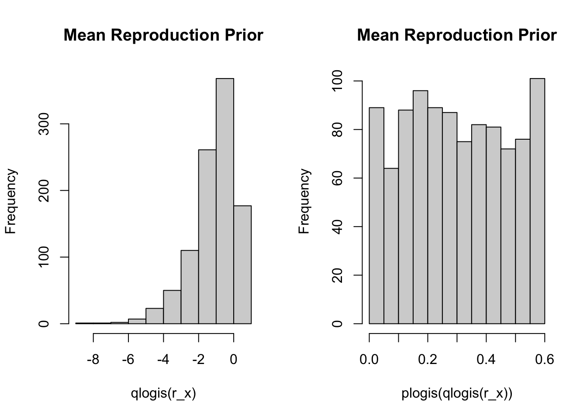
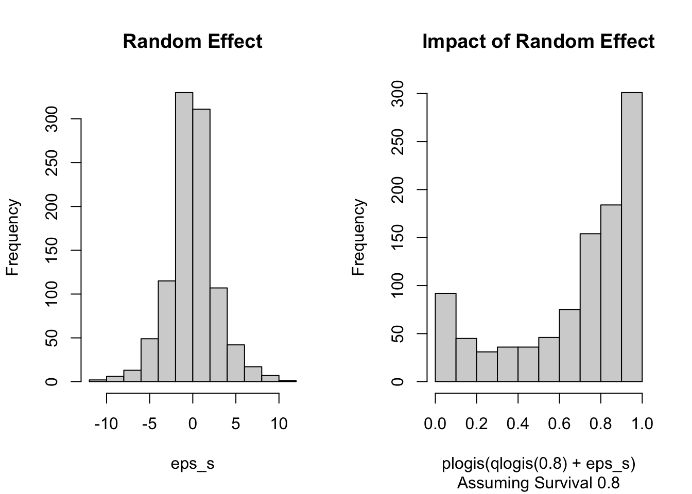
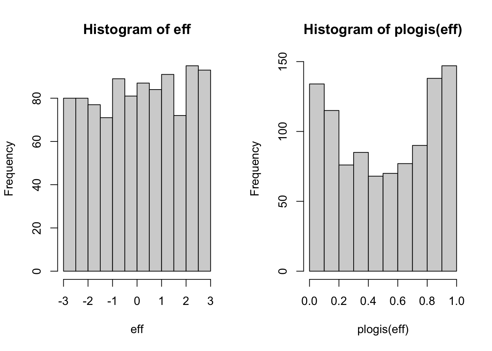
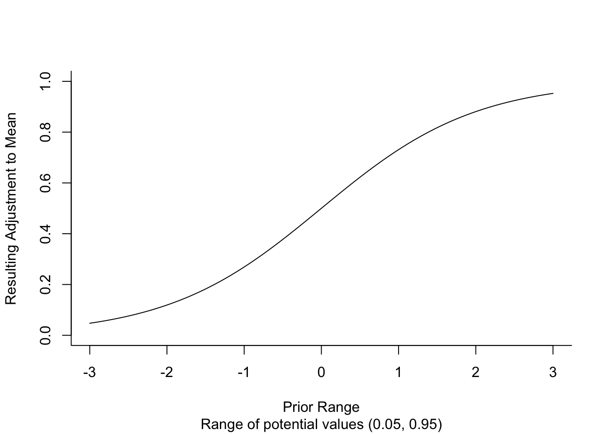

Review Summary
Summary
SpeedGoat Wildlife Solutions was asked to provide a review of an integrated population model (IPM). The model file is the main focus of the critique. Below we highlight blocks and lines of code and then through text and demonstration offer thoughts on the model’s construction.
General Considerations
The model is written such that each herd is looped over within each model run. There is nothing wrong with this approach, but the places where information is shared are few, which makes us wonder why this construction was desirable.
Priors
Throughout the prior section we plot the priors to help readers visualize the choices made.
Survival
The first prior specified describes mean survival and reproduction for all ages and sexes included in the process model.
# JAGS (8:9)
s_x[h] ~ dunif(0.4,1)
s_mu[h] <- logit(s_x[h])Show the code
s_x <- runif(1000, 0.4, 1)
par(mfrow = c(1, 2))
hist(qlogis(s_x), main = "Mean Survival Prior")
hist(plogis(qlogis(s_x)), main = "Mean Survival Prior")
The survival prior does a good job of covering, what we believe to be, the entire range of values that are possible for adult survival. However, all values are equally likely on the link scale. Our expectation would be to show increased support for those values observed most often. In language meant to provoke, we don’t believe that survival of 0.4 is as likely as survival of 0.8. It is also worth remembering that this value is the mean survival, the middle of the distribution.
Reproduction
The second prior describes a range of likely values for the reproduction term of the process model.
# JAGS (10:11)
r_x[h] ~ dunif(0,0.6)
r_mu[h] <- logit(r_x[h])Show the code
r_x <- runif(1000, 0, 0.6)
par(mfrow = c(1, 2))
hist(qlogis(r_x), main = "Mean Reproduction Prior")
hist(plogis(qlogis(r_x)), main = "Mean Reproduction Prior")
The potential values for reproduction range from 0 to 0.6 calves per female. The use of the logit link function implicitly suggests that twinning is not possible and ratios above parity will never be observed. All of which seems likely given species biology. Again, we would have expected that an informative prior be constructed such that values nearer the observed mean be more likely than more extreme values.
Random Effect
# JAGS (13:23)
s_sd[h] ~ dunif(0.05,2)
s_tau[h] <- pow(s_sd[h],-2)
r_sd[h] ~ dunif(0.05,2)
r_tau[h] <- pow(r_sd[h],-2)
for(yr in 1:nyr){
eps_s[h, yr] ~ dnorm(0,s_tau[h])
eps_r[h, yr] ~ dnorm(0,r_tau[h])
}
}Show the code
s_sd <- runif(1000, 0.05, 5)
eps_s <- rnorm(1000, 0, s_sd)
par(mfrow = c(1, 2))
hist(eps_s, main = "Random Effect")
# Possible adjustments assuming mean of 0.8
hist(
plogis(qlogis(0.8) + eps_s),
main = "Impact of Random Effect",
sub = "Assuming Survival 0.8"
)
The use of a uniform distribution to describe the dispersion of a random effect in terms of the standard deviation is a popular technique. Here we see that the random effect actually transforms the once vague prior to something more informative. The limits of the uniform distribution are somewhat narrow relative to many published works. Despite how the uniform was specified the more concerning approach is the indexing of the random effect to each herd by year. This implies that sufficient data exist to independently estimate survival and reproduction 1,960 times, 40 herds by 49 years. I would be curious if s_sd and r_sd are truly identifiable particularly because a unique intercept is being drawn for each herd.
Treatment Coefficients
Historical management treatments applied to populations were represented using categorical covariates and an effects parameterization. The effect of a given treatment is assumed constant across herds and years. The priors for these effects were constructed with the following JAGS code.
# JAGS (27:38)
mtrt_eff_s ~ dnorm(0, 0.001)T(-3, 3)
mtrt_eff_r ~ dnorm(0, 0.001)T(-3, 3)
wtrt_eff_s ~ dnorm(0, 0.001)T(-3, 3)
wtrt_eff_r ~ dnorm(0, 0.001)T(-3, 3)
ptrt_eff_s ~ dnorm(0, 0.001)T(-3, 3)
ptrt_eff_r ~ dnorm(0, 0.001)T(-3, 3)
ftrt_eff_s ~ dnorm(0, 0.001)T(-3, 3)
ftrt_eff_r ~ dnorm(0, 0.001)T(-3, 3)
strt_eff_s ~ dnorm(0, 0.001)T(-3, 3)
strt_eff_r ~ dnorm(0, 0.001)T(-3, 3)
ttrt_eff_s ~ dnorm(0, 0.001)T(-3, 3)
ttrt_eff_r ~ dnorm(0, 0.001)T(-3, 3)Show the code
# Assume algortihms for truncation are similar
eff <- truncnorm::rtruncnorm(1000, -3, 3, 0, sqrt(1/0.001))
par(mfrow = c(1, 2))
hist(eff)
hist(plogis(eff))
The range of these priors (-3, 3) seems potentially restrictive. The plot below demonstrates the range of adjustments that are possible given a covariate value of 1.
Show the code
coef_rng <- seq(-3, 3, by = 0.05)
min_max <- round(plogis(c(-3, 3)), 2)
plot(
coef_rng,
plogis(coef_rng),
ylim = c(0, 1),
type = "l",
bty = "L",
xlab = "Prior Range",
ylab = "Resulting Adjustment to Mean",
sub = paste0("Range of potential values (", min_max[1], ", ", min_max[2], ")")
)
Given the range of potential adjustments (0.05, 0.95) we can conceive of a situation where two covariates with strong positive effects cannot be offset by a third negative covariate. At the outset this limits the ability of certain covariates given the effect of other covariates, which is a fairly complicated relationship to understand apriori. However, allowing for a wider range of values for each coefficient is likely to decrease the vagueness of the prior.
Some of the covariates include treatments that could be handled in other ways. For example, if animals are being added to the population then perhaps adding them directly within the process model would be more satisfying. We have found that when we rely on additive relationships on demographic rates people are less inclined to believe the model. Say we have an adult female population of 100 and we add 10 animals. A linear predictor may allow for a few more animals to survive, but the answer will almost certainly not reflect the addition of 10 animals and a new population of 110. When we add those individuals directly to the population the communication of model results is more clear if not comforting.
Offset - Survey Timing
# JAGS (45)
offset ~ dnorm(0, 0.001) This formulation surprised us. We tend to fix issues with survey timing by using indexing to derive observed quantities at the time they are collected in the field. For example, if we have a model with an anniversary of January 1 and an aerial survey that typically occurs in March then we would take the number of animals on January 1 and project them forward ~2 months to derive what should be observed by the survey. The approach of using a covariate is not necessarily wrong, but given that the covariate is continuous implies a linear relationship. Furthermore, the only values of the covariate that can be observed are 0, 5, and 9, which seems like a very difficult regression to fit given the limited range of variation. If there is a strong argument for using the covariate approach we might suggest exploring a categorical covariate as it would allow for independent offsets to be estimated for each survey timing. That said, we don’t think it is too difficult to derive the numerator and denominator of the ratio at the time of the survey.
Model Anniversary Sidebar
The model anniversary is an important reference point that determines the relationship between a model operating in discrete time and data collected at points within a year. Monitoring programs rarely collect all data types at the same time of year. These differences in data collection create challenges for the modeler. Survival estimation is probably one of the best examples of this as animals are generally collared in the middle of winter, but models rarely being the biological year in the middle of winter. In some cases this may not matter, such as when adult survival is estimated from a 12 month period beginning in January, which may be similar to survival estimated from June to June. However, collaring efforts focused on tagging animals in their first year of life tend to miss some time between the model anniversary and when collars are deployed. This gap is rarely observed and no good technique exists to fill this void without biasing results. Survival estimation aside comparing populations with different model anniversaries seems a difficult task that is worth exploring. For example, a population with an anniversary in October will have more animals than a population with an anniversary in December because of mortality if for no other reason. Furthermore, any sort of seasonality being picked up by the data will confound our ability to interpret population performance as well as estimate coefficients. It seems prudent to explicitly define the model anniversary and align all observed and modeled quantities within a year. We are curious if the model anniversary is “changing by herd” in this model as the timing of count data changes.
Random Effect for Site Group
# Random effect for year-SG
for(sg in 1:nsight_grp){
sight_tau_yr_sg[sg] <- 1/(sight_sd_yr_sg[sg]^2)
sight_sd_yr_sg[sg] ~ dunif(0, 10)
for(yr in 1:nyr){
sight_yr_sg[yr, sg] ~ dnorm(0, sight_tau_yr_sg[sg])T(-5, 5)
}
}This seems like a pretty typical representation of a random effect. We would want to check the posteriors to look for any boundary effects or sensitivity to the parameterization of the uniform prior and truncation. As a matter of style we greatly prefer the 1/x^2 syntax to that used on lines 15 and 17. Perhaps consider adopting this style everywhere the SD is related to precision.
Sightability Linear Predictor
# Sightability
for(sg in 1:nsight_grp){
p_mu[sg] ~ dnorm(mean_grp_p[sg], mean_grp_ptau[sg])T(0,1)
}
# Linear predictor for sightability
# p is only used in observation model for surveys that *do not* have their own
# sightability estimate
for(h in 1:nherd){
for(yr in first[h]:nyr){
logit(p[h, yr]) <- p_mu[sight_grp[h]] + sight_yr_sg[yr,sight_grp[h]]
}
}The truncation of the normal distribution is not needed here and could cause spurious results. In this case the only possible values of p_mu are 0.5 to about 0.73. Is this intended to be an informative prior? The script named run_IPM.Rmd on line 211 shows at least a few mean p values greater than 0.73.
We are curious if sight_yr_sg is identifiable. We talk a lot about the dimensions of random effects, sample size, and smoothing. Here we naively expect that the marginal estimates are very flexible, but wonder what is being shared if the random effect is indexed by year and sightability group. In this case we see each site group has its own variance estimate that creates marginal effects within that site group through time. Given these choices site groups are unrelated and the annual effects are independent among sight groups. The annual fluctuations could potentially be assumed to be similar among surveys, but we haven’t quantified if this is reasonable and do not know the reasoning behind choosing this construct.
Sex Ratio
The sexratio parameter appears to be used to extrapolate a female only model to include male animals. The indices on sexratio suggest a unique estimate for each year by herd combination and so no sharing of information. We see 13 herds represented in the data and 25 unique years with 53 total observations, but 51 unique combinations of herd and year. The Klinse-Za herd had two estimates in 2020 and 2021. Given the relatively small number of samples and what we assume are pretty small sample sizes we would encourage some smoothing of the parameter to minimize binomial variation, spurious variation due to small sample size.
The use of sexratio occurs on the model anniversary, which implies that the timing of the model and the survey are the same. We don’t know if this is true, but if there are differences in survival by sex then it might be worth indexing the population to derive the ratio at the time the surveys are completed in each herd. For example, the model notes suggest the second ageclass contains animals aged 9 months to 21 months. So, in general the model anniversary is something like April? If that is true and some of the sexratio data were collected in the fall it might be worth thinking through the consequences of that mismatch. Particularly since the prior on line 99 repeates a single value for all herd by year combinations.
Independence
The input data going into the IPM are supposed to be independent. The lack of independence among data sets is a topic of research that could be cited to clear the way for using data multiple times, but at a minimum it might be worth acknowledging that the same data were used twice while modeling sex ratio.
Process Model
The process model seemed clear and consistent with previous implementations. Of course, in the interest of appeasing reviewers it might be easiest to use the binomial and Poisson distributions directly. The original reason for the approximation was to make sure the model ran every time a user asked it to, which is important when building software, but can be handled by the user in an interactive session.
One thing that was not obvious to us was the use of 3 stages. The survival term is not indexed by age/stage. The reproduction term R is related to field data that includes all non-calf animals and calves, so again no need for extra stages. Perhaps there is a reason for the 3 stages, but it was not obvious to us during the review process.
JAGS Indexing
The initialization of parameters, say lambda on line 120, has not been necessary for some time. JAGS now allows the user to monitor parameters that are not “completely defined”. In short, a leading NA is not a problem.
Derived Parameters
mean_R/mean_S
The use of these two terms took some thinking to understand the intent of their use. The first appearance of the terms is on 130 and 131. On these lines we understand the intent to be calculating the mean of the parameter prior to treatments being implemented. Later, mean_R is adjusted by subtracting off the offset term for each survey. At first blush it would appear that all of these calculation can be replaced by r_mu and s_mu. Both of those terms represent the mean in the absence of the categorical covariates (i.e. reference class is coded as 0). The random effects are hierarchically centered and so have a mean of 0. The only continuous covariate is the offset. Typically when running models in JAGS continuous covariates are centered and scaled to avoid issues with the MCMC sampler. If that were the case then the offset could be set to 0, the mean, to observe the overall mean. If these changes were made then we could eliminate lines 130, 131, and 175.
The remainder of evaluating the alternative no action hypothesis seems logical.
Observation Models
Sightability
On line 245 we see that pdat, the probablity of observing a marked animals, enters the model via a normal distribution truncated at 0 and 1. This formulation is probably worth thinking about as many of the data points entering the model are 1 or very close to it. We might prefer to transform the estimates to the logit scale (i.e. right hand side) and treat them as realizations of a Normal on that scale. Then the resulting distribution could be used as the probability of success in a binomial model and no truncation would be necessary. If the binomial is unattractive because of the count data entering the model at the same point then perhaps a two step process would be more attractive. The count data appears to be the basis for the cdat, pdat and edat. Given that and a lack of understanding of the survey methods we are not sure where the measure of precision that accompanies the counts and estimates come from or which variance components they represent. That information might change preferences for how this model is written.
The choice of a Normal distribution implies that the count data can be greater than or less than the true number of animals at the time of the survey. The model on 252 uses the same formulation as that used for the sightability data. This is a pretty reasonable way to approach the problem. For what it is worth, when given minimum count data our typical observation model is a negative binomial.
We touched on the parameter p above. The issues mentioned above not withstanding we really feel like some amount of sharing of information could really help the model. A sightability survey is sampling the landscape and so the mean of the landscape is likely a reasonable predictor. We just don’t understand the need for each herd by year combination to have a unique value or why this is desirable. The point here is please think about how the model was constructed and how that relates to your knowledge of the landscape and survey protocol we don’t mean to say it is wrong.
Survival
The survival model seems reasonable. The underlying estimates we believe were estimated using Kaplan-Meier. Many of the values entering the model are very close to 1. In fact, 184 values are greater than 0.95, which means that 0.36 of the dataset has a mean greater than 0.95. Almost half of the estimates are greater than 0.90. The mean of the column is 0.86 if all values are taken with equal weight. The 0.86 seems reasonable given the species life history, but having so many years with survival greater than 0.90 does not seem reasonable. It would take very little reproduction to observe rapid population growth with survival so high. We might encourage future refinements to consider using survival modeling techniques and sharing information along the temporal or spatial axes.
Recruitment
This model seems reasonable. We would encourage the authors to think about timing of the parameter, field data collection, and the relationship to model anniversary. Also, it might be worth deriving reproductive quantities of interest such as calves per cow. This simple step would provide a more direct and accessible metric of reproduction for managers to discuss. Such a metric would make the contributions of survival and reproduction to population growth more clear. For example, if survival is 0.8 then to reach a lambda of 1 we would need to observe reproduction around 0.2.
Sex Ratio
We were initially confused by the sex ratio. After looking over the model inputs we are assuming the sex ratio is actually the ratio of adult females relative to the total adults. Given our understanding of the data the algebra looks correct for deriving total adult population and our only thought was why not calculate the number of adult males.
Conclusion
After reviewing the code we see several places where sharing of information could lead to more robust estimates, suggested a few tweaks to priors, and raised a few concerns about the timing of data collection relative to the model. Other than these two primary points we saw no fatal flaws with the model. We hope our comments are helpful and are happy to continue the conversation.